Allenati.
Registra.
Migliora.
ImberGym è il tuo diario di allenamento per palestra, casa e all’aperto: schede, esercizi animati, record e statistiche, più uscite GPS con Trackshow, alimentazione e integratori. Senza account, senza cloud: i tuoi dati restano sul telefono.
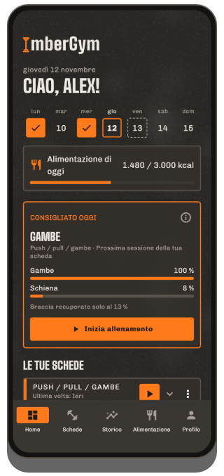
Cosa fa ImberGym
Schede e modelli
Le tue schede con sessioni, serie, ripetizioni e recuperi, oppure modelli pronti: dal total body per principianti al push/pull/gambe, calisthenics e yoga. Durata stimata in tempo reale per ogni sessione.
Condividere schede con un QR code
Tutta la scheda sta in un QR code: il tuo compagno di allenamento lo scansiona e ce l’ha subito. Senza server, senza account.
Allenamento in corso
Un esercizio per pagina, gli ultimi valori già inseriti, suggerimenti di progressione, superserie, regolazioni degli attrezzi salvate. Timer di recupero anche sulla schermata di blocco: disattivabile, con il segnale che preferisci (gong, campana, fischietto…) e vibrazione facoltativa.
Esercizi animati
Ognuno dei 259 esercizi mostra il movimento con una figura, i muscoli coinvolti, il tempo di esecuzione e consigli sulla tecnica.
Record
Peso massimo, 1RM stimato, volume, ripetizioni, distanza e passo: «Nuovo record!» subito dopo la serie.
Statistiche e mappa del corpo
Settimana, mese o 3 mesi con la variazione, distribuzione per gruppo muscolare, mappa del corpo con recupero, progressi per esercizio e riepiloghi della settimana e dell’anno da condividere. Tutti gli allenamenti per mese, filtrabili per scheda ed esercizio.
Battito dall’orologio e dalla fascia
ImberGym recupera la frequenza cardiaca del tuo orologio per ogni allenamento tramite Health Connect. Con una fascia cardio Bluetooth la vedi in tempo reale, con zone cardiache e recupero in base al battito.
Più palestre
Aggiungi i luoghi in cui ti alleni: ImberGym riconosce dove sei all’inizio e mostra la palestra nello storico e nel calendario.
Corpo
Peso e grasso corporeo con media di 7 giorni, anche direttamente dalla bilancia tramite Health Connect. Foto dei progressi con sovrimpressione per la stessa posa e confronto prima/dopo; le foto restano nell’app.
Alimentazione
Oltre 1.200 alimenti offline, aggiunti con un tocco. Scanner di codici a barre (Open Food Facts), ricette con calcolo delle porzioni e obiettivo calorico dinamico in base all’attività, se vuoi. Disattivabile del tutto.
Integratori
I tuoi prodotti con quantità abituale, pulsante «Preso», calendario e promemoria nei giorni che scegli, senza suggerimenti di dosaggio.
Calendario, backup e importazione
Allenamenti nel calendario del dispositivo se vuoi. Backup per cambiare telefono, importazione da Strong e Hevy, esportazione CSV.
Tabata e intervalli
Tabata, HIIT, 30/30 o EMOM: come avvio rapido o come blocco nella tua scheda. Grande conto alla rovescia e segnale prima di ogni cambio, anche a telefono bloccato.
ImberGym in immagini
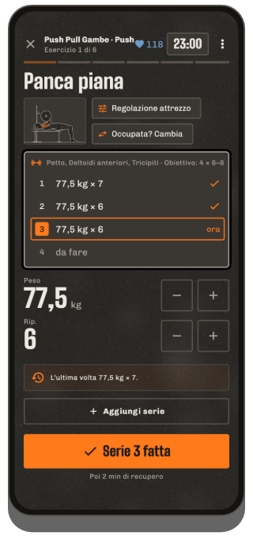
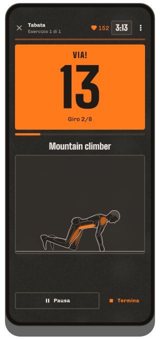
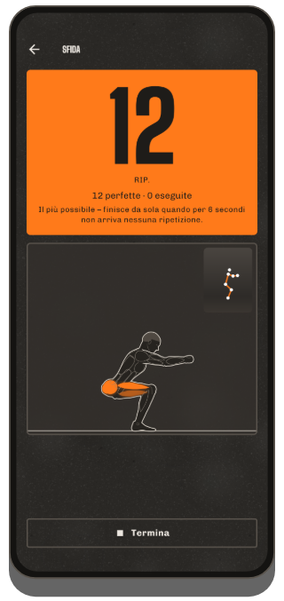
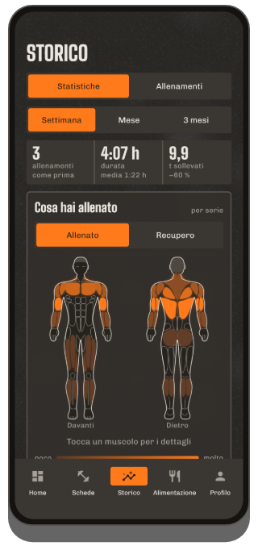
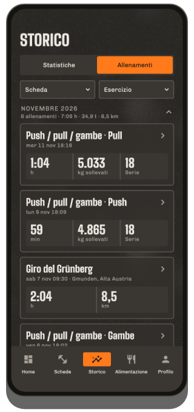
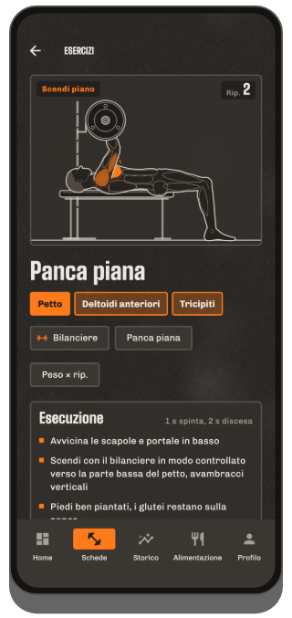
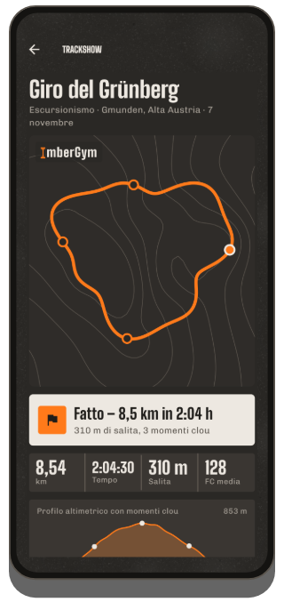
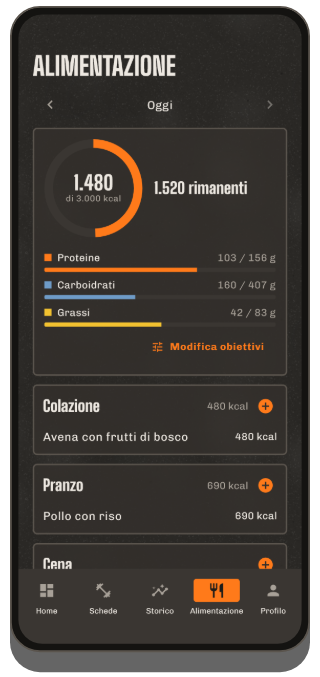
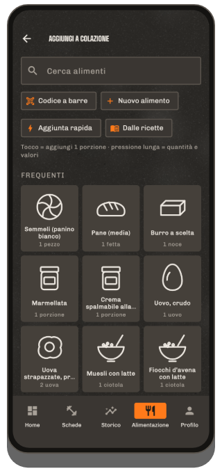
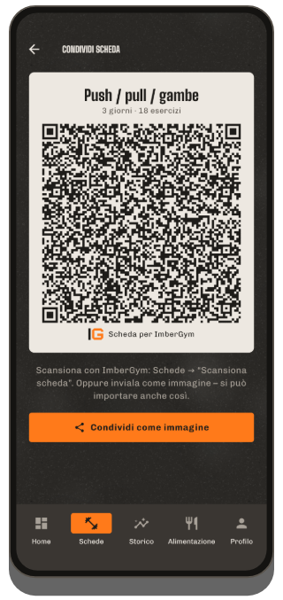
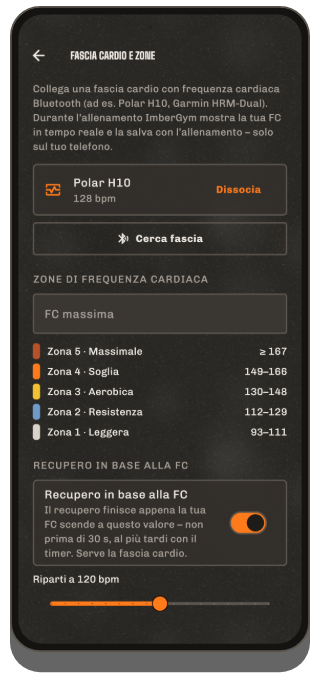
All’aperto
Registrazione GPS
Corsa, bici, escursioni: distanza, passo o velocità e dislivello grazie al barometro. Continua a registrare a schermo spento, va in pausa ai semafori e riprende da sola dopo una sosta.
Trackshow
Il tuo giro come volo di camera sulle curve di livello, con momenti clou come il tratto più ripido, il punto più alto e il chilometro più veloce, da condividere come immagine per le storie o come video.
Esportazione GPX
Ogni registrazione si esporta come file GPX e si apre in altre app.
Gratis e Premium
Gratis
- Allenamenti completi con timer di recupero
- Fino a 5 schede e 5 esercizi personali, tutti i modelli
- Libreria esercizi con animazioni
- Storico, record, statistiche, riepilogo settimanale e annuale
- Battito dall’orologio tramite Health Connect, fascia cardio in tempo reale con zone e recupero in base al battito
- Integratori con promemoria, sfida con conta-ripetizioni dalla fotocamera
- Conta-calorie con catalogo alimenti e codice a barre, peso
- Passare schede con un QR code, condividere allenamenti come scheda grafica
Premium
- Schede ed esercizi personali illimitati, importare schede tramite QR code
- Mappa del corpo, recupero, andamento di grasso corporeo e peso
- Allenamento a intervalli (Tabata e altro)
- All’aperto con GPS, Trackshow in video
- App per l’orologio (Wear OS)
- Palestre, tessere, foto dei progressi
- Tutte le ricette, obiettivo calorico dinamico
1,99 € al mese, 14,99 € all’anno o un unico pagamento di 29,99 € (a vita, prezzo di lancio; poi 39,99 €) tramite Google Play: prova gratuita di 7 giorni dopo il primo allenamento.
Domande frequenti
Serve un account?
No. ImberGym funziona senza registrazione e senza un server proprio.
Dove vengono salvati i miei dati?
Solo sul tuo telefono. Niente cloud, niente pubblicità, niente analisi. Più dettagli nell’informativa sulla privacy.
L’app funziona offline?
Sì. Solo due cose usano internet: la ricerca di un codice a barre sconosciuto su Open Food Facts e il nome del luogo di un’uscita GPS (per questo il punto di partenza viene inviato al servizio di localizzazione di Android). Tutto il resto funziona offline.
Come arriva in ImberGym il battito del mio orologio?
Tramite Health Connect, l’archivio dei dati sulla salute di Android. Nell’app del tuo orologio attiva Health Connect e consenti «Frequenza cardiaca»: lo fanno tra le altre Samsung Health, Garmin Connect, Fitbit, Polar Flow, Withings e Zepp (Amazfit). Poi tocca «Carica FC dall’orologio» nei dettagli dell’allenamento in ImberGym. Huawei: Huawei Health non scrive in Health Connect; l’app «Health Sync» (Play Store) può trasferire i dati: origine Huawei Health, destinazione Health Connect, seleziona «Frequenza cardiaca». Consiglio: avvia un allenamento anche sull’orologio, così misura in continuo.
Quali fasce cardio funzionano?
Qualsiasi fascia cardio Bluetooth con il profilo standard di frequenza cardiaca, ad es. Polar H9/H10, Garmin HRM-Dual o Wahoo TICKR. Associala una volta nel profilo, in «Fascia cardio e zone»: poi si collega da sola a ogni allenamento.
Come condivido una scheda?
Nell’editor della scheda tocca l’icona QR e mostra il codice o invialo come immagine. L’altra persona lo scansiona nella scheda «Schede» con «Scansiona scheda», anche da un’immagine. Tutta la scheda è nel codice, non viene caricato niente online.
Nuovo telefono: cosa succede ai miei dati?
Nel profilo, in «Dati e backup», crea un backup e salvalo ad es. su Google Drive. Sul nuovo telefono scegli «Nuovo telefono? Ripristina un backup» nella prima schermata.
Vengo da Strong o Hevy: posso portare i miei allenamenti?
Sì. Importa l’esportazione CSV della tua vecchia app in «Dati e backup» → «Importa allenamenti». ImberGym abbina gli esercizi e mostra prima un’anteprima.
Le mie foto dei progressi vengono caricate online?
No. Sono salvate in una cartella privata dell’app, non compaiono nella galleria e sono escluse persino dai backup di Android.
Posso nascondere l’alimentazione?
Sì. Tutta la sezione si disattiva nel profilo: ImberGym resta un puro diario di allenamento.
Come elimino i miei dati?
Le singole voci direttamente nell’app; tutto insieme disinstallando l’app.